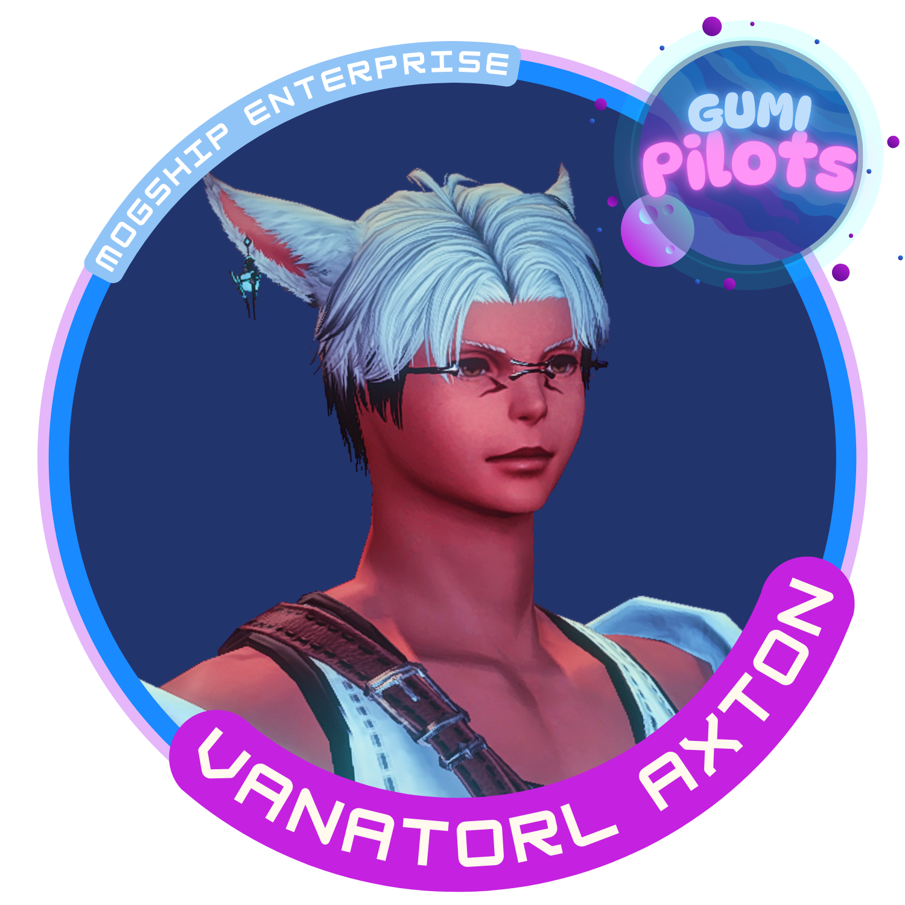

Azariah Hoshino
Social Media Manager
Joined on January 19, 2025
In charge of social and kofi management. Aza manages the Free Company's social media presence and serves as the group's photographer, capturing the best moments and showcasing the FC’s adventures to the wider community. Whether it’s posting event highlights, sharing recruitment messages, or maintaining an engaging online presence, Azariah ensures that the FC stays visible and active. Additionally, they handle the Kofi setup, providing a way for members to support the FC’s activities and growth.
Akasha Akuma & Dark Slumber
Social Event Planner
Joined on January 19, 2025
Akasha brings energy and excitement to the Free Company through expertly planned social events. From seasonal festivals to casual gatherings, they create experiences that strengthen the bonds between members. Their creativity and organizational skills ensure that the FC is always buzzing with activity, making it a fun and lively place for everyone.
Tsuki Hoshino
Feedback Collector
Joined on January 19, 2025
Plays a crucial role in gathering valuable feedback for the Free Company by conducting exit interviews and ensuring that members' voices are heard. By understanding why players leave and collecting suggestions for improvement, Tsuki helps refine the FC’s structure, policies, and overall experience. Their efforts ensure that the FC continues to grow and evolve based on real member experiences.
Zetasa Suizahara
Treasurer
Joined on January 22, 2025
Zetasa manages the Free Company's finances with precision, ensuring that resources are allocated effectively and the FC's economy remains stable. This includes tallying up gil donations in the FC chest, monitoring changes, and recognizing contributors. Zetasa also tracks significant item donations, using their best judgment to set aside valuable items for giveaways or events. Additionally, they help keep the FC chest organized by sorting and moving specific materials, such as peacock ore and coke, into their respective tabs.
Vanatorl Axton
Notices and Updates
Joined on January 19, 2025
Vanatorl is responsible for keeping everyone informed with timely notices and updates. They actively maintain Mognet by posting polls and notices based on current events, ensuring engagement while keeping content PG. Vanatorl also updates the FC notice board, including the greeting message, whenever necessary. Additionally, they track and share important FC policies, event reminders, and game patch notes, helping members stay up to date.
Lysithea Gracefeel
Farm Group Organizer
Joined on January 20, 2025

Lysithea leads the charge in organizing mount farming events, helping members collect some of the most sought-after mounts in Final Fantasy XIV. Whether it’s coordinating primal fights, extreme trials, or other farming runs, Lysithea ensures that players can efficiently work together to obtain their desired mounts. Their leadership helps create a fun and rewarding experience for everyone involved.
Yuzu Rii
Senior Officer
Joined on January 18, 2025
In charge of overall FC activities and Hard content. Yuzu is a powerhouse in combat, wielding the scythe of a Reaper with unmatched precision and dealing devastating damage to foes. With deep knowledge of raiding mechanics, Yuzu serves as a trusted mentor and strategist, always eager to assist FC members in tackling the game’s toughest challenges.
Sumielle Avendin
Senior Officer and Raid Leader
Joined on January 18, 2025
In charge of overall FC activities and Hard content. Sumi is a steadfast leader and a pillar of the FC, embodying both resilience and charisma. As a skilled Paladin and Dragoon, she stands at the forefront of battle, shielding her allies and striking down foes with unwavering determination. Beyond the battlefield, Sumi thrives as the host of events, bringing the community together with her infectious enthusiasm and keen sense of organization. Whether rallying members for grand celebrations or ensuring every adventurer feels at home, her presence is a guiding force that keeps the spirit of Mogship alive.
Mogumi Kupoyumi
Kupo Supreme
Founded FC on Feb 28, 2024
When most adventurers picture a moogle, they think of small, fluffy creatures bouncing through the air with their signature pom-poms, delivering letters and getting into mischief. But in this Free Company, Mogumi shatters all expectations—because this moogle isn’t just a leader, he’s an absolute unit. Towering over his kin with an awe-inspiring physique, Mogumi is a big, muscled moogle who commands respect, whether on the battlefield or at the FC’s grand feasts. But beneath those rippling biceps and mighty wings lies a humble heart full of wonder and big dreams. A true leader, Mogumi guides the Free Company with wisdom, strength, and an occasional flex for emphasis, all while looking up at the stars with longing, believing that anything is possible if we reach for the skies.